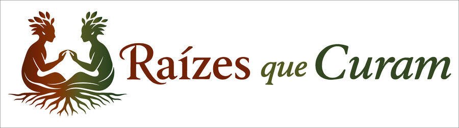
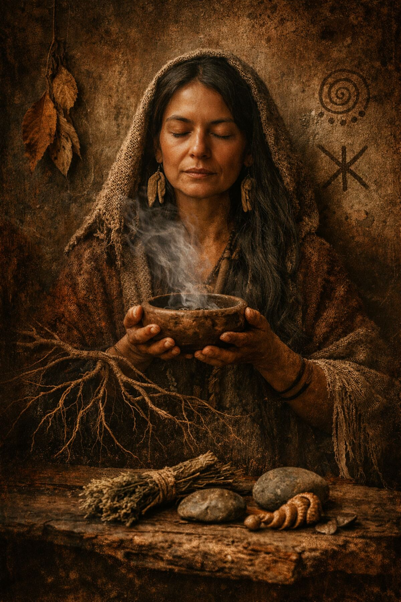

O Raízes que Curam fortalece, preserva e difunde os saberes tradicionais sobre plantas medicinais — com o protagonismo de mulheres guardiãs, regeneração ecológica e tecnologia a serviço da ancestralidade.
Conhecer o projeto Acompanhar novidadesO Raízes que Curam não quer apenas ensinar sobre plantas medicinais. Ele quer reorganizar relações entre mulheres, saberes, floresta, território, renda, memória e futuro.
Um piloto territorial no Espírito Santo, pensado desde o início como metodologia replicável para outros territórios e biomas.
Erveiras, guardiãs, hortos e iniciativas de medicina natural, registrando e visibilizando um saber vivo.
Implantação de hortos agroecológicos com espécies medicinais nativas da Mata Atlântica capixaba.
Mulheres multiplicadoras formadas para atuar como educadoras, facilitadoras e articuladoras em seus territórios.
Difusão cultural e educativa online, gratuita ao vivo, com acervo audiovisual dos saberes tradicionais.
Registro, circulação e sustentabilidade dos conteúdos através do Portal Matriarquia.

Erveiras, benzedeiras, agricultoras familiares, parteiras, quilombolas, indígenas e guardiãs de hortos e quintais medicinais — o projeto parte do princípio de que o saber já existe nesses corpos e territórios, e busca reconhecê-lo, fortalecê-lo e ampliá-lo.
Polo de formação presencial, implantação de horto-modelo e articulação comunitária na região do Caparaó.
Segundo polo territorial, com apoio socioambiental, reflorestamento e regeneração de território.
O Raízes que Curam está em fase de estruturação — hortos, formação de multiplicadoras e festival online em preparação. Em breve, novidades por aqui.